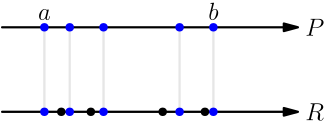
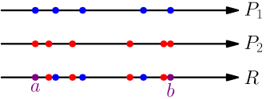
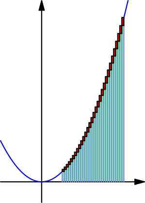

Refinement of Partition¶
Let $P$ and $R$ be partitions of $[a,b]$. We say that $R$ is a refinement of $P$ if $R$ contains all partition numbers of $P$.

Note that any partition is a refinement of itself because it contains all partition numbers of itself.
Upper and lower sums with refinements¶
Suppose that $R$ contains one more partition number than $P$, and let $f$ be a function that is continuous on $[a,b]$. Let $r$ be the partition number that $R$ has but $P$ doesn't have. The upper sums look like this:
The upper sum with $R$ seems to be less than the upper sum with $P$. We can also verify this without relying on a picture. Let $x_1,x_2,\dots,x_n$ be the partition numbers of $P$, and let $[x_{k-1},x_k]$ be the interval that contains $r$. Now $$ \text{upper sum with $P$} = (x_k-x_{k-1})\max_{[x_{k-1},x_k]}f + \text{other stuff} $$ and $$ \text{upper sum with $R$} = (r-x_{k-1})\max_{[x_{k-1},r]}f+(x_k-r)\max_{[r,x_k]}f + \text{other stuff}, $$ where other stuff is the areas of rectangles that are the same in $P$ and $R$. Adding more numbers to the interval of a maximum (e.g. $[x_{k-1},r]$ to $[x_{k-1},x_k]$) can't make the maximum smaller, so $$ \begin{align} &(r-x_{k-1})\max_{[x_{k-1},r]}f+(x_k-r)\max_{[r,x_k]}f \\ \le{}& (r-x_{k-1})\max_{[x_{k-1},x_k]}f+(x_k-r)\max_{[x_{k-1},x_k]}f \\ ={}& (r-x_{k-1}+x_k-r)\max_{[x_{k-1},x_k]}f \\ ={}& (x_k-x_{k-1})\max_{[x_{k-1},x_k]}f. \end{align} $$ This shows that the upper sum does not increase when adding one partition number. It follows that it does not increase when adding several partition numbers. A similar derivation works for lower sums.
Suppose that $f$ is continuous on $[a,b]$, and let $P$ be a partition of $[a,b]$. Then $$ \text{upper sum of $f$ with $P$} \ge \text{upper sum of $f$ with any refinement of $P$} $$ and $$ \text{lower sum of $f$ with $P$} \le \text{lower sum of $f$ with any refinement of $P$}. $$
We may have equality here, and not necessarily $>$ and $<$. For example, if $f(x) = 3$ for all $x$, then any upper sum or lower sum on $\leftsquarebracket 2,4]$ is $6$ (see this example).
Upper and lower sums of different partitions¶
Let $P_1$ and $P_2$ be any partitions of $[a,b]$, and let $f$ be a function that is continuous on $[a,b]$. Let's make a third partition $R$ by combining all numbers of $P_1$ and $P_2$.

Now $R$ is a refinement of both $P_1$ and $P_2$, so $$ \begin{align} \text{lower sum of $f$ with $P_1$} &\le \text{lower sum of $f$ with $R$} \\ &\le \text{upper sum of $f$ with $R$} \\ &\le \text{upper sum of $f$ with $P_2$}. \end{align} $$
Suppose that a function $f$ is continuous on $[a,b]$. Then $$ \text{any lower sum} \le \text{any upper sum}. $$ for any lower and upper sums of $f$ on $[a,b]$.
Recall that we defined the integral to be the only number between any lower sum and any upper sum. From the above result, it follows that such numbers exist, but there might be more than one of them. If there were multiple numbers between any upper sum and any lower sum (the two dots in the below picture), then there would be a "gap" between lower sums and upper sums:
If $f$ is continuous, there is no gap; in other words, you can make the difference between an upper and lower sum as small as you want by choosing appropriate partitions. In the below picture, the red parts make up the difference of an upper sum and lower sum.

We won't prove this better because it's surprisingly difficult and this is not a university.